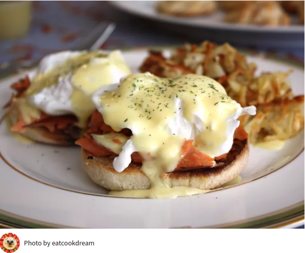

Blender hollandaise sauce

This blender hollandaise has all the same ingredients and consistency as the classic sauce, but no double boiler and no chance of the sauce separating. I love the lemony flavor on freshly steamed asparagus!
Needed ingredients
- 3 egg yolks
- 3 egg yolks
- 1/4 teaspoon Dijon mustard
- 1 dash hot pepper sauce such as Tabasco
- 1/2 cup butter
Directions
- Gather the ingredients.
- Combine egg yolks, lemon juice, mustard, and hot pepper sauce in the container of a blender; cover and blend for about 5 seconds.
- Place butter in a glass measuring cup. Heat butter in the microwave for about 1 minute, or until hot and completely melted.
- Turn the blender on; pour melted butter in a slow, steady stream until sauce is thick and smooth, about 15 to 30 seconds.
This recipe is part of a coding exercise. Text and images have been copied from allrecipes.com/recipe/84214/blender-hollandaise-sauce/